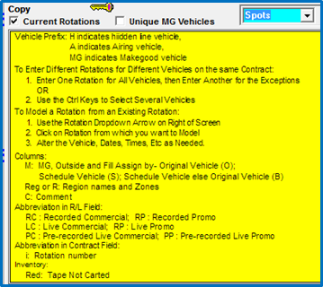
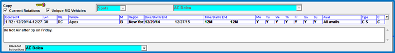
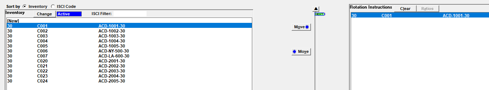
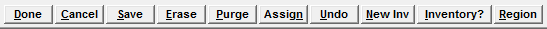

Copy Screen Layout
The Copy Screen has three main sections: the Rotation Header area at the top, the Inventory area on the left, and the Rotation Instructions area on the right.
At the bottom of the Copy screen are a number of buttons used to perform various actions such as Saving and adding inventory. The key icon in the upper left can be clicked on to see what various abbreviations shown on the Copy screen stand for, as shown below.

Rotation Header Area
The upper part of the screen is called the Rotation Header area. This is where the advertiser is selected, along with the copy length, the vehicle, the rotation start and end dates and times, and other general information about the rotation.

Rotation Header Area Field Descriptions
- Advertiser selection: The Advertiser is selected from the dropdown in the center of the screen. All copy is entered by advertiser.
- Spots/Billboards: To the left of the Advertiser dropdown is another dropdown that is used to specify whether the rotation is for regular Spots, or Open BB or Close BB. The Open BB and Close BB options are only available if the “Billboards” feature is activated in Traffic Site Options. If Billboards are not enabled, “Spots” will be the only available option in this dropdown and will therefore be automatically selected.
- Current Rotations: If this is checkbox is checked, only rotations from today’s date into the future will be displayed when viewing rotations on the rotation dropdown menu. If the checkbox is not checked, you will see expired rotations as well (in the rotation menu).
- Unique MG vehicles: When checked, any vehicle that has had a spot moved onto it as a Makegood will appear in the rotation header vehicle dropdown preceded by “MG”. If unchecked, only those vehicles ordered on the contract will appear in the dropdown.
- Contract #: This is the contract number that the copy rotation is for.
- Len: This determines the length of the copy that will be used for the rotation.
- R/L: This is the type of copy for the rotation. The available options are:
- RC: recorded commercial.
- LP: live promo (only available if “Using promo with schedule lines” is enabled in Traffic Site Options->Copy).
- RP: recorded promo (only available if “Using promo with schedule lines” is enabled in Traffic Site Options->Copy).
- PC: pre-recorded commercial.
- PP: pre promo (only available if “Using promo with schedule lines” is enabled in Traffic Site Options->Copy).
- LC: live copy (only available if Live Copy is enabled in Traffic Site Options on the Options tab, System options section).
- Vehicle: The vehicle dropdown lists the vehicles that are available to create rotations for. This includes package vehicles, hidden line vehicles, conventional vehicles, selling vehicles, and sports vehicles. An option is also available that makes it possible to create rotations for airing vehicles. If there are multiple vehicles on a contract, the system will automatically select the vehicles and display the word “[Several]” in the Vehicle field. The vehicles that are being included will be highlighted in blue in the vehicle dropdown list that appears in the vehicle field. If the rotation instructions being entered are for a single vehicle, or a subset of the vehicles on the contract, Ctrl-Click can be used to select the vehicles that should be included.
- M: Based on Traffic Site Options->Copy settings, this field determines whether makegoods and outsides will receive copy from the vehicle the spot was ordered for, or the vehicle the spot was moved to. This value can either be pre-determined, when the “always use above rules” option is selected in Traffic Site Options (in which case the field will be blank when first entering a new rotation and bypassed automatically), or can be chosen by the user at the time of rotation entry, when the “ask above rule in copy” option is selected in Traffic Site Options. There are three values available for this field:
- “O”- Makegood and Outside assigned by original vehicle: regardless of where a spot is moved, the spot will get the copy from the rotation for the original (ordered) vehicle.
- “S”- Makegood and Outside assigned by scheduled vehicle: the spot will get copy from the rotation for the vehicle that the spot was moved to (currently scheduled on). When this option is enabled in Traffic Site Options, the Copy Screen defaults to always show makegood vehicles in the vehicle dropdown to facilitate creating rotations for makegood (and outside) vehicles. Makegood vehicles have the letters “MG” before the vehicle name when shown in the vehicle dropdown.
- “B”- Makegood and Outside assigned by original vehicle or scheduled vehicle: copy assignment will first look to see if a rotation has been defined for the scheduled vehicle, and if it exists then the makegood/outside spot will get that copy, but if a rotation does not exist for the scheduled vehicle, it will use the rotation for the original/ordered vehicle (if it exists).
- Region: Regions must be defined for any rotations that use Regional or Split Copy (or Compound copy splits), and Blackouts. Select Generic from the Region dropdown when entering a Generic rotation. Select Grid to enter a Grid-based rotation.
- Date: Start & End: This field is used to specify the Start and End dates for the rotation.
- Time: Start & End: This is where the Start and End times of the rotation are entered.
- Mo, Tu, We, Th, Fr, Sa, Su: Used to indicate the days of the week the copy is valid for. For example, if there was one set of copy that was supposed to air on Monday and Tuesday, and another set that was supposed to air on Wednesday through Sunday, Monday and Tuesday would be set to “Yes” and the other days set to “No” for the first rotation; then for the second rotation, Monday and Tuesday would be set to “No” and the remaining days set to “Yes”.
- Avail: There are three options available in this field.
- All avails: When selecting this option it means that the copy will get assigned to any avail name that spots are in as long as they match the other rotation header criteria.
- Book into: This option is used to create a rotation that only applies to spots in a specific avail name. When setting the avail toggle to “Book into” and pressing Tab, the next area displays a list of avail names. Click the appropriate avail name to make the rotation apply to that specific avail name.
- Exclude: Use this option when you want the copy to apply to all avail names except for one specific avail name by selecting the avail name to exclude from the list.
- Type: This will always be set to Contract Spot.
- C: If applicable, a comment can be entered here, which will print on certain logs and certificates of performance in addition to the web log. To enter a comment, click in the box under the “C” and type in a comment. If there is an “Internal comment” or “Other comment” defined on the Order that is set to be allowed for inclusion on the Copy screen, a button “Copy contract comment to rotation comment” will appear. Pressing this button will copy the comments entered for the order (in the “internal comment” and “other comment” fields only) into the Copy Comment field. Note also that any Internal Comments and Other Comments that are set to be included on the Copy screen will appear in the white box under the copy rotation header area.
- Dropdown menu: The dropdown button at the far right of the Rotation Header area is used to bring up a list of existing rotations. Existing rotations can be viewed and selected from this dropdown.
Inventory Area and Rotation Instructions Area
The lower section of the Copy screen is divided in two parts. The left side of the screen is the Inventory area and is used to access the copy inventory for the selected advertiser. The right side of the screen is the Rotation Instructions area and is where the individual pieces of copy that make up the copy rotation are specified by moving copy from the inventory area to the rotation instruction area.

Inventory Area
- Sort by - Inventory or ISCI code: The default sort for the copy in the Inventory area is by Inventory (cart number). You can change the sort to ISCI code. (Note: if only ISCI codes are used, and not Cart Numbers, there is no difference between the two sort options.)
- Status toggle: The blue status toggle in the inventory box can be used to change the display to show active, purged or history inventory.
- Active: displays currently active inventory for the selected advertiser.
- Purged: displays expired and purged inventory that is now available for the selected advertiser or another advertiser.
- History: displays inventory that aired in the past for the advertiser.
- ISCI Filter: When typing text in this field, the list of available ISCIs will be filtered to only include results that have text within the ISCI code that matches the typed in text. To clear the typed in text, press backspace.
- New: Brings up the Copy Inventory screen.
- Change: When a piece of inventory is selected in the Inventory list, the “New” button will become “Change”. Pressing “Change” will bring up the Copy Inventory screen, with the previously selected inventory visible and available for editing.
- Move: The move button with an arrow pointing right will move a piece of copy inventory from the Inventory box into the Rotation Instructions area. When moving a piece of copy to the Rotation Instructions area, the copy will stay in the Inventory area so that it can be moved multiple times if needed (for example, if setting up a rotation instruction in which one piece of copy airs twice then the second piece of copy airs. There are several ways to define instructions like this, which are described in detail in a later section of this document). Multiple pieces of copy inventory can be moved by pressing ctrl-click on each one and then pressing the Move button, or by clicking one piece of inventory and pressing Shift-Click on another piece to select each of those pieces of inventory and everything in between, and then pressing the Move button.
Rotation Instructions Area
- Clear: Clears all copy from the rotation instructions area.
- Ratios: Allows you to define how often each piece of copy in a given rotation instruction must air in order to meet the requirements of a full rotation. This button only becomes active if there’s more than one piece of inventory in the Rotation Instructions area.
- Next: The “Next” arrow points to the next piece of copy that will air. It can be moved by pressing the up and down arrows above and below the “Next” arrow.
- Move: The move button with an arrow pointing left will move a piece of copy inventory out of the Rotation Instructions area.
Copy Buttons
At the bottom of the screen there are buttons that perform a variety of actions on the Copy screen. Not all of the buttons are enabled all the time. For example, the Save button will not be enabled when there’s nothing to save, and the New Inventory button does not become enabled until an advertiser has been selected.

- Done: saves any changes made in Copy that can be saved and returns to the previous Jobs Screen.
- Cancel: returns to the previous Jobs Screen without saving any changes.
- Save: saves any unsaved changes in Copy, and remains in the Copy Screen. When creating or editing a rotation, the Save button will not become active until all the required fields have been filled out.
- Erase: erases the selected copy rotation (version 7.0 and earlier), or brings up the Erase screen from which rotations can be erased (version 7.1 and above – see the Erase section for additional details). Only rotations with a start date after today’s date are available to be erased.
- Purge: accesses the Purge screen from where expired copy can be purged for reuse.
- Assign: accesses the Assign Copy screen from where copy can be manually assigned. (Copy can also be assigned when generating logs on the Logs screen and the best practice is to assign copy during the log generation process.)
- Undo: undoes any unsaved changes that were made.
- New Inv: brings up the Copy Inventory screen.
- Inventory?: brings up a tool that can be used to find the advertiser, status, rotation dates, and product for an entered cart number.
- Region: brings up the screen where copy regions are defined and edited for split copy and blackouts.